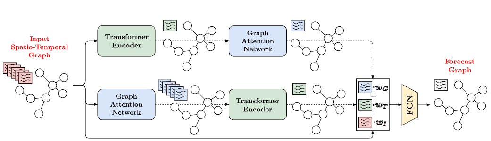
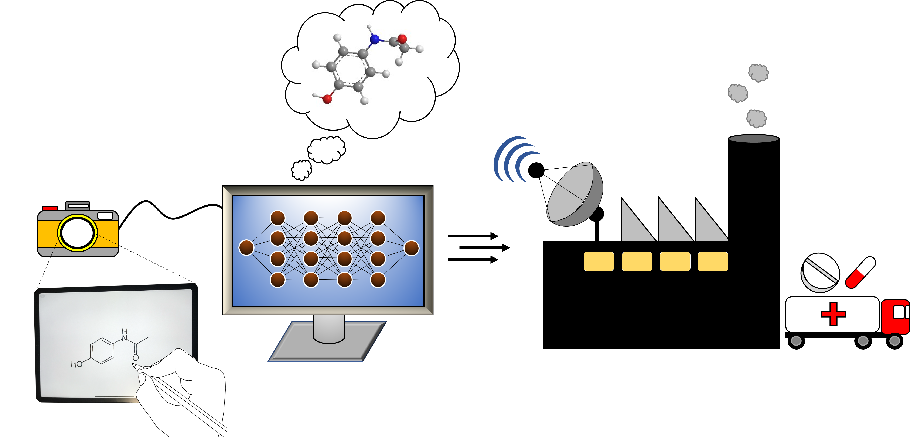

Conference Contributions
On this page is a collection of my contributions to conferences. This includes posters, workshops and presentations.
There is also a short description and some personal reflection about the works presented.
Where possible, my talks have been recorded and shared here!
2022
RADNET: Incident Prediction in Spatio-Temporal Road Graph Networks Using Traffic Forecasting
This work was carried out as part of my internship at TRL software
in partnership with the Alan Turing Institute.
This was a collaborative project between myself and Shreshth Tuli, where we were tasked with the
identification of anomalies in noisy, spacio-temporal road graph networks that covered Radcliffe, Greater Manchester, UK.
Reference:
RADNET: Incident Prediction in Spatio-Temporal Road Graph Networks Using Traffic Forecasting’,
2022 IJCAI Workshop on Artificial Intelligence for Time Series Analysis: Theory, Algorithms, and
Applications, Vienna, Austria, 24/07/22.
Go to Paper
Images as Molecular Descriptors for Materials Discovery
This project was my first presentation at an international conference!
After the presentations, the work was published in the Journal of Materials Research. You can find more details in the Journal Articles section of this website!
Reference:
Wilkinson, M, Martinez Hernandez, U, & Castro Dominguez, B, 2022, ’Images as Molecular Descriptors for Materials
Discovery’, 2022 MRS Spring Meeting, Honolulu, USA United States, 8/05/22 - 25/05/22
Go to Paper
See In Journal Articles
See Presentation Video